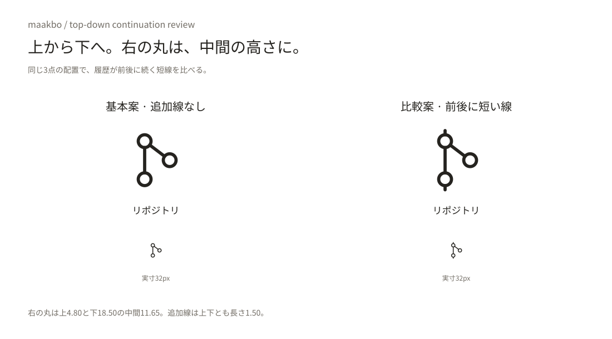
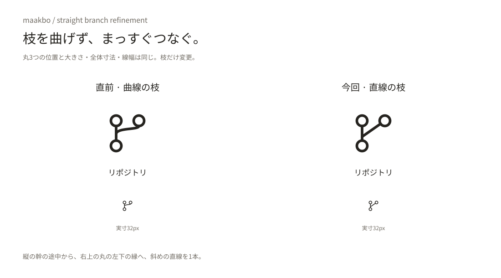
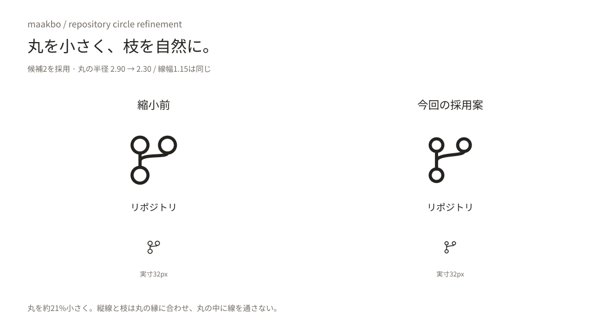
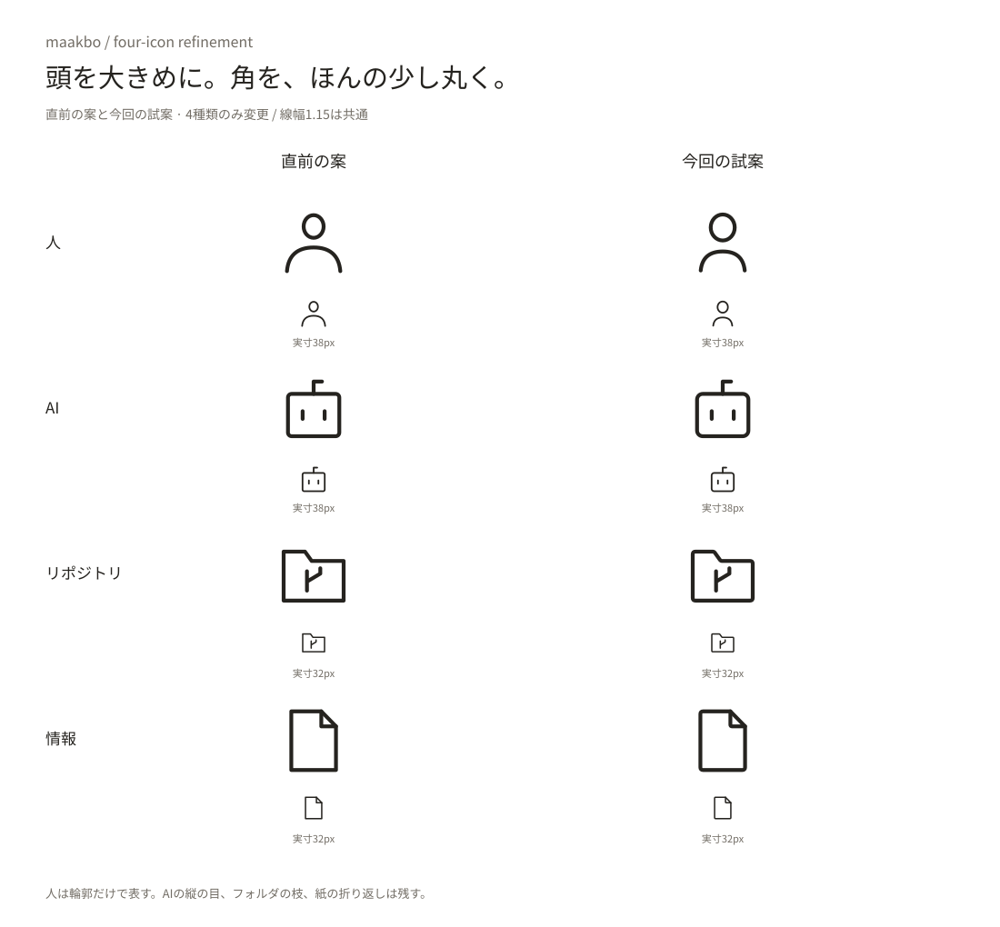

maakbo / original diagram icons · selected symbol family
四角を基本に、さっと描ける。
情報はBの紙、システムはAの状態表示付き枠。手で描き直せる12種類へ統一し、大きさの釣り合いを整えました。業務の楕円は、気持ちだけ縦にふっくらさせました。AIの目は縦線に、全体の線は少し細く、端末の角はやわらかく調整しています。人は頭を大きめ・肩を小さめに、AI・情報は少し角を丸めた試案です。リポジトリはフォルダを外し、小さな丸3つと枝分かれへ変更しました。時間は上から下へ。右の丸を上と下の中間の高さにし、上の丸から2つの丸へ直線でつないでいます。
上から下・右の丸は中間へ（比較履歴・追加線なしを採用）

リポジトリの枝を直線に（前段階）

リポジトリの丸を小さく（前段階）

人・AI・リポジトリ・情報の試案（前段階）

全12種類PNG390px実寸PNG手書きの順序最初のA/B比較